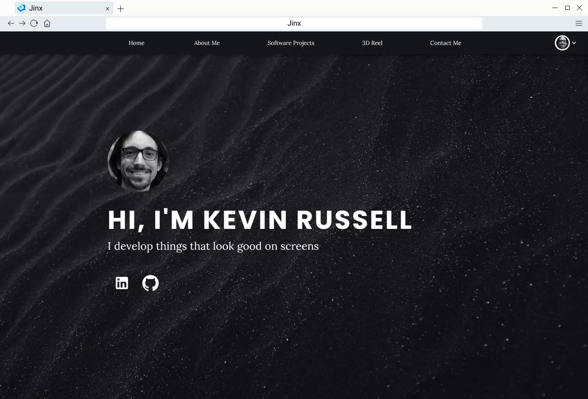

Jinx
- ReactJS
- Django
- PostgreSQL
- Material-UI
- Docker
- Dokku
- Swagger
Jinx is a web app designed to make it easy for anyone to create their own ePortfolio web page. It started as part of a group project with 4 other people at university. I have since refactored a large portion of the site and added a lot of features myself.

Process
We initially met with our client (a student from another subject) to discuss possible designs. From these discussions, we determined that the app must:
- Be easy to use
- Allow an arbitrary number of users to create portfolios
- Allow users to customise the arrangement of content
- Facilitate sharing of portfolios
Our team employed scrum processes in order to get the job done in the time available. We had 3 week sprints and a standup every week (university time commitments meant we couldn’t have one every day). We used Trello to keep track of our product backlog.
Once the semester was over I decided to make my own fork of the project so that I could clean up some of the code and implement some features that we didn’t have time to get to. I ended up completely refactoring large portions of both the backend and the frontend but was finally able to get it to a place I was happy with.
Features
- Multiple themes, each with custom colours, background image, spacing and fonts.
- Public / private switch for user’s portfolio.
- Google Design principles used throughout. Implemented with Material-UI.
- All pages are completely responsive.
- Continuous integration using Dokku, Digital Ocean and Netlify.
- Backend API documented thoroughly documented with Swagger.
- Custom link creation interface with selectable icons.
- Light and dark mode for the edit page.
Testing
User Acceptance Testing
We used a Google survey to conduct user acceptance testing in the final sprint. We made sure to use a good mix of male and female volunteers as well as a range of devices and browsers. This process was invaluable and revealed a large number of usability problems which we had not foreseen when using the application ourselves.
Integration Testing
We made use of native Django tests to conduct integration testing. For each API endpoint, we made a test database and simulated HTTP requests before checking that the responses were what was expected.